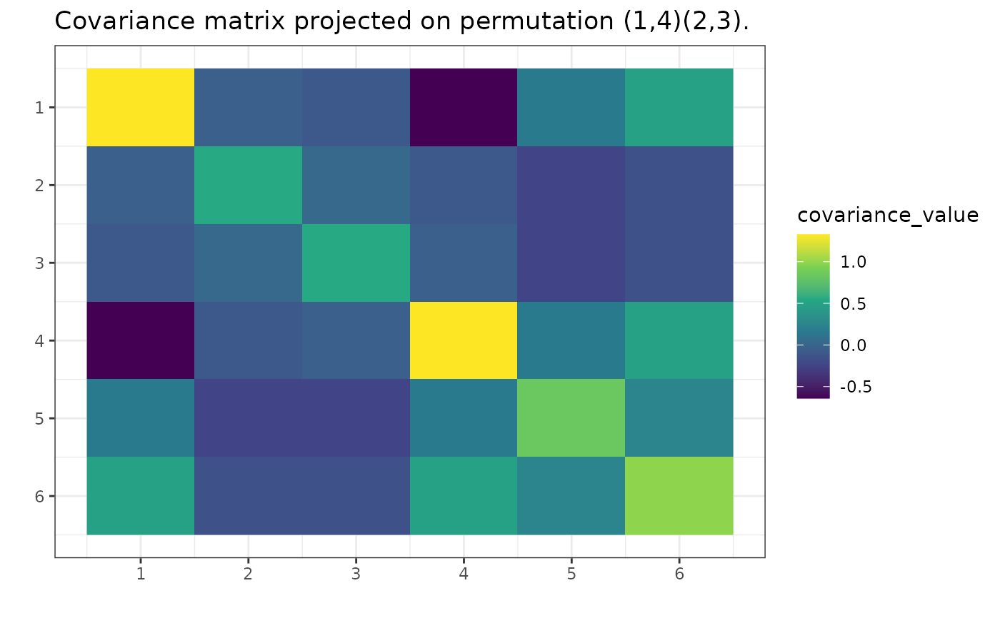

Project matrix on the space of symmetrical matrices invariant by a cyclic group of permutations.
Arguments
- S
A square matrix to be projected.
- perm
A permutation. Generator of a permutation group. Either of
gips_permorpermutations::cycleclass.- precomputed_equal_indices
The parameter is used in internal calculations when the equal indices have already been calculated. If it is not the case, leave this parameter as
NULL, and those will be computed.
Details
When S is the sample covariance matrix (output of cov(X) function, see
examples), then S is the unbiased estimator of the covariance matrix.
However, the maximum likelihood estimator of the covariance matrix is
S*(n-1)/(n), unless p > n, then the
maximum likelihood estimator does not exist. For more information, see the
Wikipedia page for Estimation of covariance matrices.
The maximum likelihood estimator differs when one knows the covariance matrix is invariant under some permutation. This estimator will not only be symmetric but also have some more values in itself the same (see examples).
The estimator will be invariant under the given permutation. Also, it
will need fewer observations for the maximum likelihood estimator to
exist (see summary.gips()). For some permutations,
even n = 1 will be enough.
Examples
p <- 6
gperm <- gips_perm(permutations::as.word(c(4, 3, 2, 1, 5)), p) # permutation (1,4)(2,3)(5)(6)
number_of_observations <- 10
X <- matrix(rnorm(p * number_of_observations), number_of_observations, p)
S <- cov(X)
projected_S <- project_matrix(S, perm = gperm)
projected_S
#> [,1] [,2] [,3] [,4] [,5] [,6]
#> [1,] 0.91382611 -0.12868824 -0.03163315 -0.12698333 -0.1448474 0.15917805
#> [2,] -0.12868824 0.80767294 -0.01407565 -0.03163315 0.1485868 -0.07996552
#> [3,] -0.03163315 -0.01407565 0.80767294 -0.12868824 0.1485868 -0.07996552
#> [4,] -0.12698333 -0.03163315 -0.12868824 0.91382611 -0.1448474 0.15917805
#> [5,] -0.14484735 0.14858680 0.14858680 -0.14484735 2.2625444 0.88567891
#> [6,] 0.15917805 -0.07996552 -0.07996552 0.15917805 0.8856789 1.40914522
# The value in [1,1] is the same as in [4,4]; also, [2,2] and [3,3];
# also [1,2] and [4,3]; also, [1,5] and [4,5]; and so on
# Plot the projected matrix:
g <- gips(S, number_of_observations, perm = gperm)
plot(g, type = 'heatmap')
